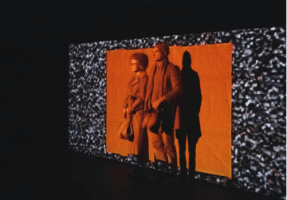
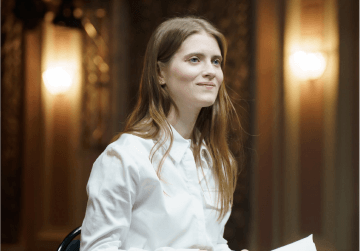
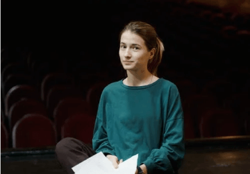

С_училища
Пьеса о демоническом обаянии студентки ПТУ и ее роковой роли в жизни преподавателя философии.

Семён Серзин сделал читку этой пьесы в рамках основной программы Любимовки-2017, Варочный Цех предоставил грант на постановку, а Московский драматический театр имени А.С. Пушкина принял спектакль в репертуар.
1 ч. 15 мин.
18+
Драматург
Роберт Аскинс
Перевод
Оксана Алёшина
Адаптация текста
Валерий Печейкин
Режиссёр
Юрий Муравицкий
Актёры
Фёдор Кокорев, Коля Ноекёльн, Ксения Чекина, Александр Пронькин, Владимир Морозов, Светлана Маршанкина
Пьеса «Длань Господня» (Hand to God) — лауреат американской театральной премии OBIE (Off-Broadway Theater Awards), номинант ежегодно присуждаемой премии TONY (Theatre Of New York), театрального аналога «Оскара», и номинант на Британскую премию Лоуренса Оливье в качестве «Лучшей Новой Комедии». Она была поставлена в бродвейских театрах и в лондонском Вест-Энде.
Этот спектакль – результат коллаборации фестиваля драматургии «Любимовка», который запустил проект по выпуску собственных спектаклей «Любимовка.Продакшн», Театра 18+ и Театра.doc. Исполнители – выпускники актерской лаборатории Юрия Муравицкого Московской Школы Нового Кино.
Режиссёр спектакля Юрий Муравицкий – лауреат Национальной театральной премии «Золотая маска», лауреат премий Herald Angel Award и Total Theatre Award в номинации Innovation, Experimentation & Playing with Form на Edinburgh Festival Fringe: «В этой пьесе меня задевает её смелость и свобода. И то, что она написана смешно. Мне сейчас интересны комедии. В январе я выпустил «Lё Тартюф. Комедия» в театре на Таганке — тоже комедию и тоже в известном смысле антиклерикальную. У меня есть стойкое ощущение что всему, что сейчас происходит в нашей стране и в мире, мы можем противопоставить только смех. Иногда горький смех, иногда злой. Сейчас в воздухе столько ненависти, что нам всем полезно больше смеяться. И над собой в том числе. «Длань Господня» — это чёрная комедия. Помимо прочего, она показывает к чему приводит навязывание и насильственное насаждение религии».
Пьеса была успешно представлена в России в формате читки в 2016 году рамках лаборатории LARK+Любимовка на сцене Центра им. Мейерхольда.
Почитать пьесу
Конкретные разговоры пожилых супругов ни о чём
Санкт-Петербург
2020
Заголовок блока с фотографиями
- 


- 

- 

Отзывы зрителей
Что-то похожее на эффект от мультфильмов типа «Сауз Парк» или про коня Боджэка возникает — я думаю, и пьеса написана с этой интонацией американских взрослых мультсериалов. И как хорошо все это с куклой-носочком. Так все чисто сделано!
Наталья Зайцева
Что-то похожее на эффект от мультфильмов типа «Сауз Парк» или про коня Боджэка возникает — я думаю, и пьеса написана с этой интонацией американских взрослых мультсериалов. И как хорошо все это с куклой-носочком. Так все чисто сделано!
Ашот
Что-то похожее на эффект от мультфильмов типа «Сауз Парк» или про коня Боджэка возникает — я думаю, и пьеса написана с этой интонацией американских взрослых мультсериалов. И как хорошо все это с куклой-носочком. Так все чисто сделано!
Сергеевич
Что-то похожее на эффект от мультфильмов типа «Сауз Парк» или про коня Боджэка возникает — я думаю, и пьеса написана с этой интонацией американских взрослых мультсериалов. И как хорошо все это с куклой-носочком. Так все чисто сделано!
Петрович